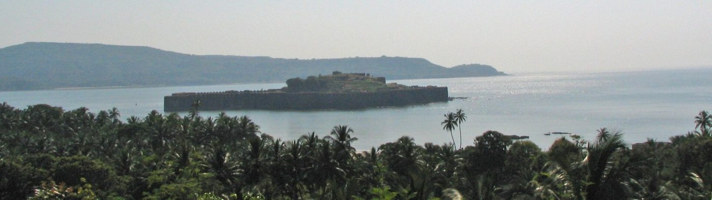
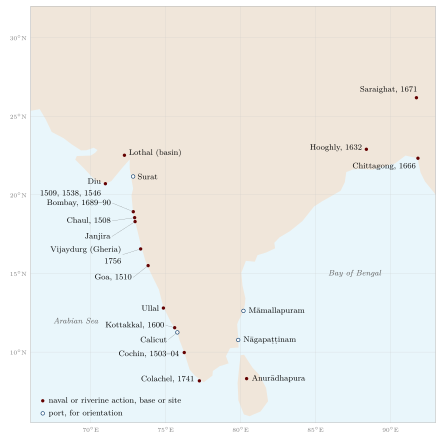

Chapter 11: Naval and Riverine Warfare¶
11.1 Introduction¶
The subcontinent has a long coastline, great navigable rivers and some of the oldest maritime trade networks in the world. Ships from Gujarat, Malabar, the Coromandel coast, Bengal and Sri Lanka traded with the Persian Gulf, the Red Sea, East Africa, Southeast Asia and China for more than two thousand years. Yet naval warfare plays a smaller part in the history of Indian states than land warfare. Most Indian rulers drew their wealth from the land and fought their wars on land; sea power was usually left to merchants, coastal communities and specialised naval families. There were important exceptions — the Cōḻa raids on Southeast Asia, the navies of Gujarat, Calicut and the Marathas, the river fleets of Bengal and Assam — and the arrival of armed European ships after 1498 forced Indian states to confront the problem of naval power directly.
This chapter surveys the evidence for Indian maritime and naval activity, the Cōḻa expeditions, riverine warfare, the encounter with the Portuguese, and the Maratha navy of the seventeenth and eighteenth centuries. Popular claims that India once possessed “the world’s first dockyard” or “a navy that ruled the Indian Ocean” are examined along the way.
11.2 Early Maritime Activity¶
11.2.1 The Harappans¶
The Harappan civilisation traded by sea with Mesopotamia and the Gulf; Harappan seals and beads have been found in Mesopotamia and in Oman and Bahrain, and Mesopotamian texts of the late third millennium BCE refer to ships from Meluhha, probably the Indus region (Possehl 2002). Clay models and seal images show boats. At Lothal in Gujarat, a large brick-lined basin adjoining the town was identified by its excavator as a dockyard. This interpretation has been widely repeated, but it is disputed: other archaeologists have argued that the basin was a reservoir or tank for water. It is safest to say that Lothal had a large brick basin whose function — dock or reservoir — remains debated, and not to describe it as “the world’s first dockyard”.
11.2.2 Texts and early historic trade¶
The Ṛgveda refers to boats and to the sea, and one hymn tells of the Aśvins rescuing Bhujyu from the ocean in a ship; the extent of Vedic seafaring is uncertain. By the early historic period, Buddhist Jātaka stories tell of merchants sailing to Suvarṇabhūmi (probably lower Burma or the Malay peninsula), and the Arthaśāstra describes a superintendent of ships (nāvadhyakṣa, AŚ 2.28), responsible for ferries, ports, river and coastal traffic and the collection of tolls, and for suppressing pirates (Kangle 1960–1965). Megasthenes mentions a board of officials responsible for co-operation with the navy, probably meaning river transport.
In the first centuries CE, trade between India and the Roman empire flourished. The Greek Periplus of the Erythraean Sea (first century CE) describes the ports of western India and the monsoon winds that made the voyage across the Arabian Sea possible; it mentions pirates on the Konkan coast. Tamil Caṅkam poems describe the port of Puhār (Kāvirippūmpaṭṭiṉam) and the ships of the yavanas (westerners) at Muziris on the Malabar coast. The Sātavāhanas put ships on their coins. None of this amounts to a navy in the modern sense, but it shows a world of sea trade that states sought to tax and protect.
11.3 The Cōḻa Naval Expeditions¶
11.3.1 Sri Lanka and the Maldives¶
The Cōḻa kings of the late tenth and eleventh centuries undertook the most ambitious overseas expeditions of any Indian state before the modern period. Rājarāja I (r. 985–1014) invaded Sri Lanka, sacked Anurādhapura and annexed the north of the island; his inscriptions also claim the conquest of “the twelve thousand ancient islands”, usually identified with the Maldives and Lakshadweep. His son Rājendra I (r. 1014–1044) completed the conquest of Sri Lanka for a time (Nilakanta Sastri 1955).
11.3.2 The raid on Śrīvijaya¶
Rājendra’s inscriptions record an expedition, around 1025, against the Southeast Asian maritime kingdom of Śrīvijaya, centred on Sumatra and controlling the Straits of Malacca. A long Tamil inscription at Tanjavur lists the places attacked: Kaḍāram (Kedah, on the Malay peninsula), Śrīvijaya itself, and a series of other ports in Sumatra and the Malay peninsula, among them Paṇṇai, Malaiyūr, Ilaṅgāśokam and Māyiruḍiṅgam, whose identifications are partly uncertain. The expedition seized the king of Kaḍāram and much treasure.
The purpose and scale of the expedition are debated. Older accounts described it as a conquest that made the Cōḻas masters of the Indian Ocean. The essays collected by Hermann Kulke, K. Kesavapany and Vijay Sakhuja show that it is better understood as a raid, possibly prompted by Śrīvijaya’s interference with the trade between south India and China, in which Tamil merchant guilds had a strong interest; the Cōḻas made no lasting conquest in Southeast Asia, and relations with Śrīvijaya were soon resumed (Kulke et al. 2009). A later Cōḻa king, Vīrarājendra, claims in his inscriptions to have conquered Kaḍāram around 1068 on behalf of a ruler who had sought his help, and to have restored it to him — a second intervention, but again not lasting rule (Nilakanta Sastri 1955). A Tamil merchant inscription at Takuapa in Thailand and other evidence show the presence of Tamil merchant guilds in the region. How the Cōḻa fleets were raised is not known: there is no clear evidence of a permanent fleet of warships, and the expedition may well have been carried in merchant ships requisitioned or provided by the guilds. It remains a remarkable feat of long-distance organisation.
11.4 The Eastern Coast and Southeast Asia¶
The eastern coast of India had long-standing maritime connections with Southeast Asia. Ports in Kaliṅga (Odisha), Andhra and the Tamil country sent merchants, monks and Brahmin priests to the kingdoms of Burma, Thailand, Cambodia, Vietnam, the Malay peninsula and Indonesia from the early centuries CE, and Indian scripts, religions and political ideas spread in the region. The Pallava kings of Kāñcī, whose port was Māmallapuram, had close relations with Southeast Asian courts, and some Southeast Asian scripts derive from the Pallava script. In Odisha, the festival of Boita Bandāṇa, held at the full moon of Kārttika, when people float small boats on rivers and the sea, is popularly associated with the memory of voyages by Odia merchants (sādhaba) to Bali, Java and other lands.
These connections were mainly commercial and cultural, not military. Apart from the Cōḻa raids of the eleventh century, there is little evidence of Indian states conducting naval warfare in Southeast Asia, and claims of an Indian “maritime empire” in the region before the Cōḻas confuse cultural influence with political control. The spread of Indian culture in Southeast Asia was carried by traders, priests and local rulers who adopted Indian forms, not by conquest (Kulke et al. 2009).
11.5 Rivers and Deltas¶
In the great river valleys of the north and east, war was often fought on and across rivers. Armies crossed rivers on boats lashed together into bridges; the Arthaśāstra discusses ways of crossing rivers with boats, rafts, inflated skins and bridges (Kangle 1960–1965). In Bengal, whose delta is cut by countless channels, control of war-boats was essential. The sultans of Bengal, the Pāla kings before them and the chiefs of the delta (the bārah bhūyān) who resisted the Mughals in the late sixteenth century all maintained fleets of river boats. The Mughals, to conquer Bengal and hold it, built their own river fleet (nawwāra), which was maintained by revenue assignments in the province (Richards 1993).
The Ahom kingdom of Assam fought its decisive battle against the Mughals at Saraighat on the Brahmaputra in 1671 largely with boats (Section 9.11) (Gait 1906). Riverine warfare thus decided the fate of the eastern regions as decisively as cavalry did in the north.
11.6 The Western Ocean before the Portuguese¶
On the west coast, the ports of Gujarat — Cambay, Broach, Surat, Diu — and of the Konkan and Malabar were centres of a trade in which Gujarati, Arab, Persian, Mappila Muslim, Jewish and other merchants took part. The rulers of these coasts levied customs and offered protection but rarely tried to control the sea itself. Piracy was common, and merchant ships carried armed men. The Zamorin (Sāmūtiri) of Calicut, the most powerful ruler of the Malabar coast, relied on the Mappila Muslim community for his maritime strength. The sultans of Gujarat had a fleet, which in alliance with the Mamluk sultanate of Egypt defeated a Portuguese squadron at Chaul in 1508, before being defeated in turn by the Portuguese off Diu in 1509 (Pearson 1987; Subrahmanyam 1993).
11.7 The Portuguese Challenge¶
11.7.1 The cartaz system¶
When Vasco da Gama reached Calicut in 1498, he opened an era in which European ships, heavily armed with cannon, sought not merely to trade but to control the sea. The Portuguese seized Goa in 1510 and built a chain of fortified ports. They claimed the right to license all shipping in the Arabian Sea, requiring merchant ships to buy a pass (cartaz) and to call at Portuguese ports to pay duties, and they attacked ships that did not comply (Pearson 1987; Subrahmanyam 1993). Their naval superiority rested on the broadside-armed sailing ship and on their willingness to use violence at sea, which Indian rulers, for whom the sea had been a space of relatively free trade, did not at first match.
11.7.2 The Kuñjāli Marakkārs¶
The most persistent resistance at sea came from the Kuñjāli Marakkārs, a lineage of Mappila Muslim naval commanders in the service of the Zamorin of Calicut. For most of the sixteenth century, successive Kuñjālis led fleets of small, fast, oared vessels that attacked Portuguese shipping along the Malabar coast and beyond, avoiding battle with the Portuguese galleons and exploiting their knowledge of the shallow coastal waters. The fourth Kuñjāli built a fortified base at Kottakkal, quarrelled with the Zamorin, and was besieged by a combined force of the Zamorin and the Portuguese; he surrendered in 1600 and was executed by the Portuguese at Goa (Malekandathil 2010). The Kuñjālis are remembered in Kerala as heroes of resistance to European domination, and the Indian Navy has named an establishment after them.
11.7.3 Rani Abbakka of Ullal¶
On the Tulu coast north of Mangalore, the queen of the small principality of Ullal, Abbakka Chowta, resisted Portuguese attempts in the mid-sixteenth century to enforce their control over the trade of the coast, in alliance with the Zamorin. Portuguese sources record expeditions against Ullal; much of what is told of her comes from later local tradition (Chapter 16).
11.8 Calicut and Cochin¶
The arrival of the Portuguese in Malabar quickly drew them into the rivalry between the Zamorin of Calicut, the most powerful ruler of the coast, and the rulers of Cochin, who were his tributaries. The Portuguese allied with Cochin, and in 1503–1504 a small Portuguese force under Duarte Pacheco Pereira, with Cochin’s troops, defended Cochin against a much larger army of the Zamorin for several months, exploiting the backwaters and fords of the region and the firepower of their guns and boats. The episode established the Portuguese on the coast. The Zamorins fought the Portuguese for most of the sixteenth century, on land and sea, with the help of the Kuñjāli Marakkārs and of Muslim merchants, and the coast remained a zone of chronic warfare (Pearson 1987; Malekandathil 2010).
11.9 The Gujarat Sultanate, the Ottomans and Diu¶
The Gujarat sultanate was the most important Indian maritime state of the early sixteenth century. Its ports traded with the Red Sea, the Persian Gulf, East Africa and Southeast Asia, and its merchants were among the wealthiest in Asia. The Portuguese attempt to control the trade of the Arabian Sea brought them into conflict with Gujarat and with the Mamluk and then the Ottoman sultans, who were concerned with the Red Sea trade. After the defeat of the Gujarati–Mamluk fleet off Diu in 1509, the Portuguese sought to obtain Diu itself, and in 1535 the sultan Bahādur Shāh, pressed by the Mughal Humāyūn, allowed them to build a fort there. Relations soon broke down; Bahādur was killed in a confrontation with the Portuguese in 1537. In 1538 an Ottoman fleet under Süleyman Pasha, in alliance with Gujarat, besieged the Portuguese fort at Diu, but the siege failed, and the Ottomans withdrew. A second Gujarati siege in 1546 also failed. Diu remained Portuguese until 1961 (Pearson 1987; Subrahmanyam 1993).
11.10 Bengal: The Mughals, the Portuguese and Arakan¶
In Bengal, the rivers and the Bay of Bengal were the scene of long conflicts in the sixteenth and seventeenth centuries between the Mughals, the local chiefs, Portuguese adventurers and the kingdom of Arakan, on the coast of present-day Myanmar. The kingdom of Arakan, with its capital at Mrauk-U, was a significant naval power in this period. Its fleets, manned partly by Portuguese freebooters and by local sailors known in Bengal as Magh, raided the Bengal delta for slaves and plunder from bases at Chittagong and the island of Sandwip, carrying off large numbers of people to be sold or settled in Arakan. In 1632 Shāh Jahān’s governor besieged and took the Portuguese settlement at Hooghly. In 1666 the Mughal governor Shāyista Khān, having built up a large river and coastal fleet and won over many of the Portuguese, captured Chittagong from Arakan, ending the raids (Richards 1993). The campaign is one of the few significant naval operations undertaken by the Mughal empire, and it shows that the Mughals could build and use fleets when their interests required it. The Arakanese raids also show that maritime violence in the Indian Ocean was not only the work of Europeans; slaving and raiding by local powers were part of the history of these seas too.
11.11 The Siddīs of Janjira¶
The Siddīs (also called Ḥabshīs) were people of East African origin who came to India as soldiers, slaves and sailors and rose to high positions in the Deccan sultanates; the most famous of them, Malik Ambar (1548–1626), was regent of the Ahmadnagar sultanate and a leading commander against the Mughals (Eaton 2005). On the Konkan coast, a Siddī family held the island fortress of Janjira from the late fifteenth century (Figure 11.1), first as vassals of Ahmadnagar and Bijapur and later as admirals of the Mughal fleet on the western coast. The Siddīs were the principal naval rivals of the Marathas: Śivājī and his successors attacked Janjira repeatedly but never took it. In 1689 the Siddī admiral Yāqūt Khān, acting for the Mughals in a war with the English East India Company, occupied most of Bombay island and besieged the English in their fort until the Company made peace with Aurangzeb in 1690. The Siddīs of Janjira remained rulers of a small state until 1948.


11.12 The Maratha Navy¶
11.12.1 Śivājī and the sea¶
Śivājī was among the first Indian rulers of the period to build a navy of his own. His conquest of the Konkan coast in the 1650s and 1660s brought him into conflict with the Siddīs of Janjira (Section 11.11) and with the Portuguese and English. He built fleets of small and medium vessels at Kalyan and other ports, and fortified islands and headlands: Sindhudurg near Malvan was begun in the 1660s, and Vijaydurg, Suvarnadurg and Kolaba became important naval bases (Apte 1973; Gordon 1993). The Maratha fleet consisted mainly of gurābs, two- or three-masted vessels carrying guns, and gallivats, lighter oared vessels; it was suited to coastal warfare rather than battle in the open sea.
11.12.2 Kānhojī Āṅgre¶
The Maratha navy reached its height under Kānhojī Āṅgre, who became admiral (sarkhel) around 1698 and controlled much of the Konkan coast from his bases at Kolaba and Vijaydurg (Gheria) until his death in 1729. Āṅgre’s fleet levied passes on merchant ships, as the Portuguese did, and seized ships that refused, including vessels of the English East India Company, which called him a pirate. English expeditions against his bases in 1718 and 1720 failed, and a combined English–Portuguese attack on Kolaba in 1721 also failed (Apte 1973). After his death his sons divided his power, and in 1756 a combined force of the Company’s Bombay Marine, a Royal Navy squadron and the Peshwa’s army destroyed the fleet of his son Tulājī Āṅgre at Vijaydurg. The Peshwas, more interested in land campaigns, did not rebuild a strong navy.
Kānhojī Āṅgre was an able commander who built a formidable coastal power. Some popular accounts describe him as having “ruled the Arabian Sea” or “defeated the combined European navies”; his achievement was more limited but real: for three decades he made the Konkan coast dangerous for European shipping and forced the Company to negotiate.
11.13 Travancore and the Battle of Colachel¶
On the Kerala coast, the Dutch East India Company, which had displaced the Portuguese from Cochin in 1663, sought to control the pepper trade of the small Malabar kingdoms. In 1741 Mārtāṇḍa Varma, the ruler of Travancore, defeated a Dutch force that had landed at Colachel, in the far south of Kerala. The battle was small in scale, but it was a rare defeat of a European company by an Indian army in the period, and it ended Dutch ambitions in the region. One of the Dutch officers captured, Eustachius De Lannoy, entered Travancore service and helped to train its army in European methods and to build its fortifications; the state that Mārtāṇḍa Varma built on this basis is described in Chapter 9.
11.14 Merchant Ships, Pirates and the Mughal Empire¶
Indian merchant shipping in the seventeenth century was large and valuable. Ships owned by Mughal nobles and merchants of Surat sailed each year to the Red Sea, carrying pilgrims to Mecca and goods for sale. In 1695 the English pirate Henry Every captured the Ganj-i Sawāʾī, a great ship belonging to the Mughal emperor, returning from the Red Sea with pilgrims and treasure; the passengers were brutally treated. Aurangzeb’s government retaliated by holding the English Company responsible and threatening its trade, and the Company was obliged to provide armed escorts for Indian ships and to pay compensation. The episode illustrates both the wealth of Indian maritime trade and the Mughal empire’s dependence on others for its protection at sea (Subrahmanyam 1993).
11.15 The Bombay Marine¶
The English East India Company’s own naval force on the western coast, later known as the Bombay Marine, grew from the armed ships the Company kept from the early seventeenth century to protect its trade. It fought the Portuguese, the Marathas under the Āṅgres and pirates of the Arabian Sea, and in 1756, together with a Royal Navy squadron, destroyed the Maratha fleet at Vijaydurg (Section 11.12). Its ships were largely built in India, at Surat and Bombay, by Indian shipwrights, and many of its sailors were Indian (Malekandathil 2010). The Bombay Marine was a forerunner of the Royal Indian Navy, and through it of the navies of India and Pakistan.
11.16 Indian Seamen in European Ships¶
The European companies that came to dominate the Indian Ocean depended from the start on Indian seamen. The Portuguese manned their ships in Asian waters largely with Asian sailors, and the English, Dutch and French companies did the same. The word by which the British came to call these men, lascar, comes from the Persian lashkar (“army”) and lashkarī (“soldier”), and its use shows the overlap between military and maritime labour in the Indo-Persian world (Jaffer 2015).
Lascars were recruited through intermediaries — the serang (boatswain or headman) and his subordinate tindals — who engaged crews from the coastal towns of Bengal, Gujarat, the Konkan and Malabar, and from further afield in the Indian Ocean, and who represented them to the European officers. They served on the Company’s merchant ships, in the Bombay Marine and other armed vessels, and from the late eighteenth century increasingly on ships sailing to Britain. Their pay was lower than that of European sailors, their conditions often harsh, and in British ports they were subject to legal restrictions that confined them to particular ships and lodgings; in the early nineteenth century reports of lascars stranded and destitute in London prompted official enquiries (Jaffer 2015).
In the age of steam the employment of Indian seamen grew. By the early twentieth century Indian crews — many from Sylhet and Chittagong in Bengal, from the Punjab and from the western coast — formed a large part of the workforce of British merchant shipping, especially in the stokeholds of steamships. They served in both world wars, and many were lost when their ships were sunk; Indian merchant seamen who died in the world wars are commemorated with other sailors on war memorials such as those at Bombay and Chittagong (Balachandran 2012).
The lascars belong to the military history of India in two ways. They were part of the maritime labour on which European naval power in the Indian Ocean rested, as the sepoys were part of the military labour on which the Company’s land power rested; and their experience — of recruitment through intermediaries, unequal pay, and service far from home — parallels in many respects that of the sepoys described in Chapter 19.
11.17 Tactics of the Coastal Navies¶
The Indian navies of the early modern period generally avoided pitched battles with European sailing warships, whose broadsides they could not match. Instead they adopted tactics suited to their ships and their coasts. Fleets of light, oared vessels — the Malabar paraus, the Maratha gallivats — could move in calms when sailing ships were becalmed, enter shallow waters and river mouths where larger ships could not follow, and attack becalmed or isolated merchant ships by surrounding them and boarding. Larger vessels such as the Maratha gurāb, with a few guns firing from the bow, could engage at a distance. Coastal forts provided refuge and support, and the fleets operated close to them. These tactics made the Kuñjālis and the Āṅgres formidable in coastal waters but left them vulnerable when the Europeans concentrated superior force against their bases, as at Kottakkal in 1600 and Vijaydurg in 1756 (Apte 1973; Malekandathil 2010).
11.18 Mysore and the Sea¶
Haidar Ali and Tipu Sultan, though primarily land powers, recognised the importance of the sea. After conquering the coast of Kanara and Malabar, Haidar built a small fleet, and Tipu planned to build a larger one with French help, establishing dockyards on the Kanara coast. His navy never became a serious force, but his efforts show the growing awareness among Indian rulers of the late eighteenth century that the East India Company’s power rested in part on its command of the sea, and that an Indian state that wished to resist it needed naval as well as land forces (Roy 2011).
11.19 Indian Ships and Shipbuilding¶
Indian ships of the western Indian Ocean were traditionally built with planks sewn together with coir rope rather than fastened with iron nails, a technique described by medieval travellers including Marco Polo. Sewn hulls were flexible and easily repaired, though less suited to carrying heavy guns. Later Indian shipbuilders adopted iron fastenings and European designs. By the eighteenth century the shipyards of Surat and Bombay, run by Parsi master builders such as the Wadia family, built large ships of teak for the East India Company and for the Royal Navy; teak was prized for its strength and resistance to rot and shipworm (Malekandathil 2010).
Texts such as the Yuktikalpataru, attributed to King Bhoja, classify ships by size and shape and discuss the woods suitable for their construction. The attribution and date of this text are uncertain, and its classifications are schematic. Claims sometimes made on its basis — that ancient Indian ships were built without iron to avoid interference with the magnetic compass, for example — are anachronistic. The magnetic compass was used in Indian Ocean navigation from the medieval period, but there is no evidence that it influenced shipbuilding in this way.
Indian pilots were skilled navigators who used the stars, the monsoon winds and detailed knowledge of coasts and currents. The name “Hippalus”, sometimes given to the south-west monsoon wind, comes from a Greek navigator to whom Greek sources attributed the discovery of the direct route across the Arabian Sea; it has nothing to do with Indian terminology.
The vessels used in war on the Indian coasts were mostly adapted from those used in trade and fishing. Table 11.1 lists some of the types mentioned in this chapter. The names were used loosely in European and Indian sources, and the same name could describe rather different vessels in different places and centuries (Apte 1973; Malekandathil 2010).
11.20 Assessment¶
The naval and amphibious events discussed in this chapter are listed in Table 11.2, and the places where they occurred are shown in Figure 11.2. The map makes one point at a glance: almost every action took place within sight of land, on a river or against a coastal fort, and none was a fleet battle in the open ocean.

The naval history of India is often presented either as a story of forgotten greatness or as one of neglect. Neither picture is accurate. Indian merchants and seamen were central to the trade of the Indian Ocean for millennia, and coastal states taxed and protected that trade. A few states — the Cōḻas, Gujarat, Calicut, the Marathas, the Ahoms on their river — built fleets that were effective in their own waters. But most Indian states did not seek to control the sea, and they had no answer to the armed sailing ships of the Europeans, who used naval power to tax and then to dominate Indian trade. The East India Company’s command of the sea was one of the foundations of its victory on land.